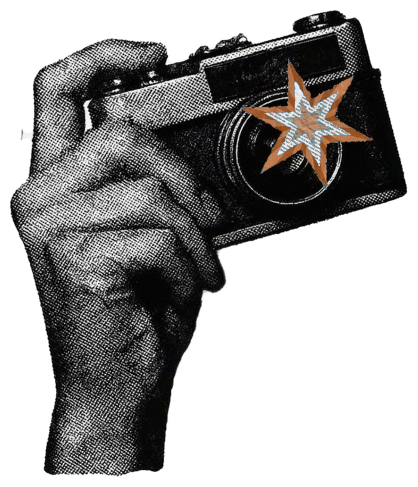
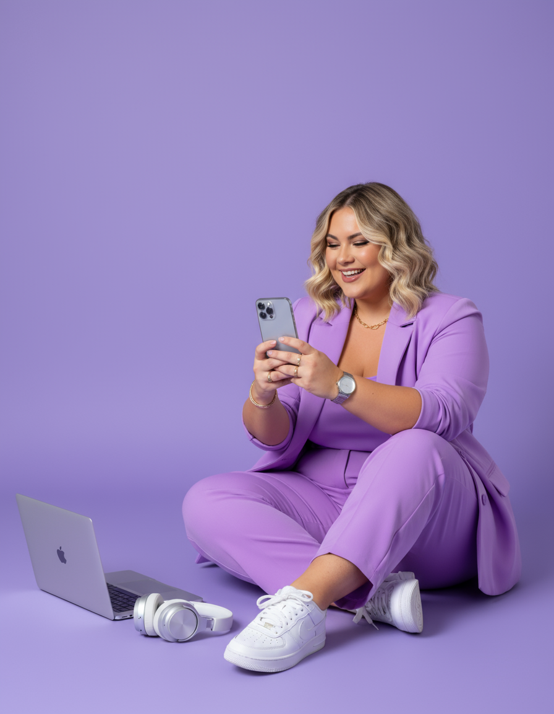

UGC TECH
DO ZERO
Do primeiro cadastro às campanhas internacionais



Do primeiro cadastro às campanhas internacionais


Do primeiro cadastro às campanhas internacionais
Um guia prático para mulheres brasileiras que desejam criar conteúdo para aplicativos, plataformas e ferramentas digitais — mesmo começando do zero e sem falar inglês.
por Luana Ferdes
Uma empresa desenvolve um aplicativo de inteligência artificial para organização de tarefas.
A marca pode solicitar um vídeo mostrando:
A criadora não precisa desenvolver o aplicativo. Seu trabalho é produzir o conteúdo solicitado, respeitando o briefing e as regras da campanha.
Esses conteúdos podem servir como amostras para seu portfólio. Identifique os vídeos como projetos demonstrativos, principalmente quando não forem trabalhos contratados por uma empresa. Não apresente uma demonstração como se fosse uma campanha oficial.
Você não precisa ser perfeita no primeiro vídeo. Precisa estar disposta a aprender, praticar e melhorar.
Nos vídeos de UGC Tech, a gravação de tela é muito importante.
Antes de gravar:
Dica: grave pequenos trechos em vez de tentar fazer tudo perfeitamente em uma única tomada.
Cena 1 — Hook
“Eu sempre esquecia alguma tarefa importante durante o dia.”
Cena 2 — Problema
“Às vezes, eu anotava em vários lugares e depois não encontrava nada.”
Cena 3 — Demonstração
“Comecei a testar esse aplicativo para reunir minhas tarefas em um só lugar.”
Cena 4 — Benefício
“Assim, consigo visualizar melhor o que preciso fazer.”
Cena 5 — CTA
“Se você também gosta de manter tudo organizado, vale a pena conhecer.”
O roteiro é um exemplo. Só utilize afirmações que correspondam à experiência real e às funcionalidades do aplicativo.